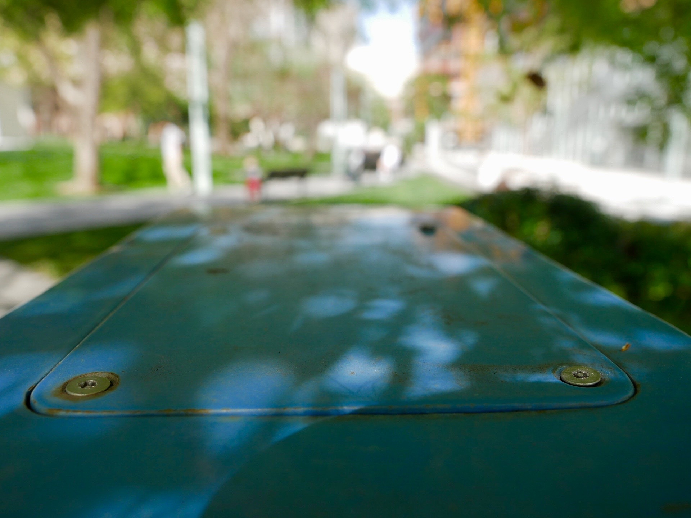
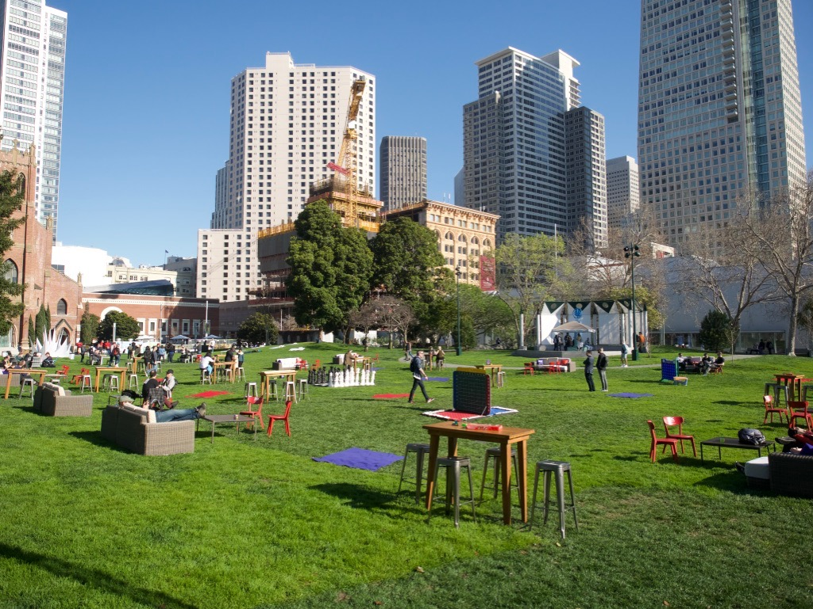
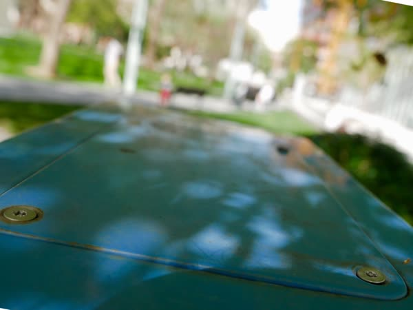

here's a photo:
where was it taken?
explore the real world
see details you never noticed
work with your friends

find just the right angle
and take the photo yourself!
fotofoto is a reality game where you are given a bunch of photos and want to find the places where they were taken so you can take the photos again.
There is a large variety in the kind of photos you will encounter. Sometimes, the challenge is in finding the area where the photo is taken. Sometimes, it requires noticing the smallest details. Some photos require you to get to a hard-to-reach place, while others are taken from an unusual perspective.
Most photos contain clues, which can be landmarks, messages, scenery, people, or other things that help lead you to the right spot. Some are trickier than others, and require perception, collaboration and wit!
While searching, not only will you find a new appreciation for the spaces around you — you might also find yourself becoming a photographer along the way!